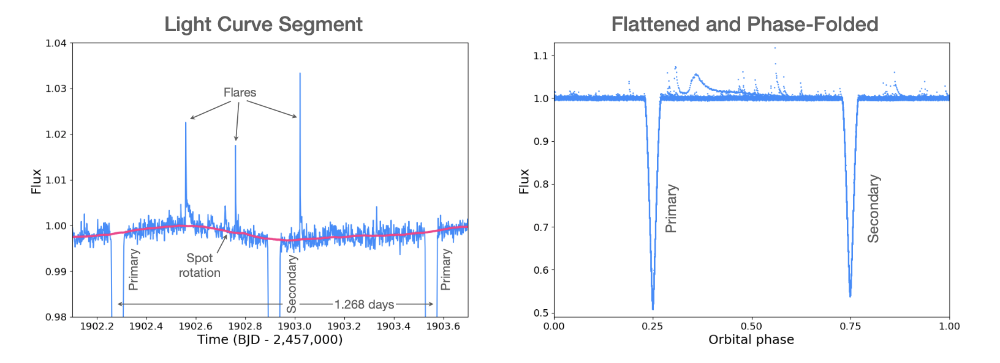
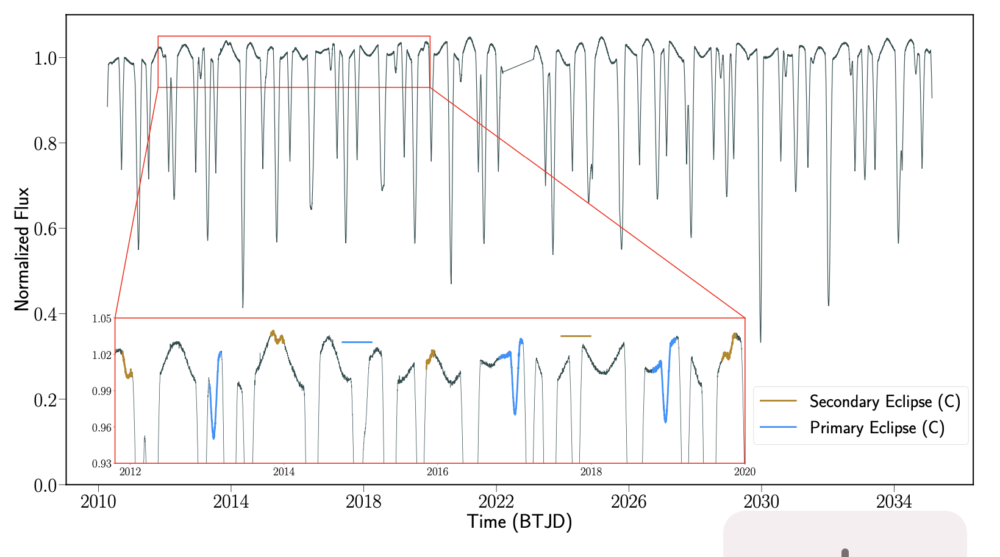
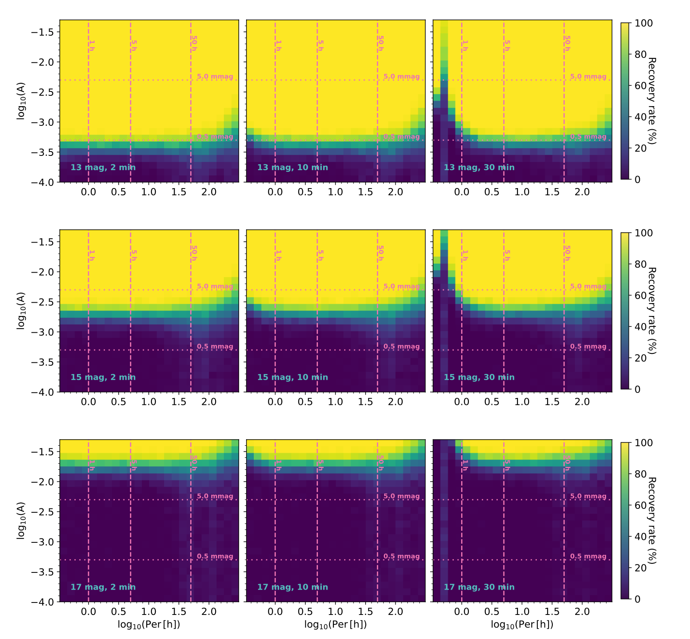

Welcome TESS followers to our latest news bulletin! This week, we are looking at three recent papers from the archive. Enjoy!
The Benchmark M Dwarf Eclipsing Binary CM Draconis With TESS: Spots, Flares and Ultra-Precise Parameters (Martin et al. 2023) :
CM Draconis is an eclipsing double-lined spectroscopic binary star composed of two nearly-identical M dwarfs on a nearly edge-on orbit. The component stars are fully convective, orbit each other every 1.26 days, produce 50%-deep eclipses, and have a bound tertiary component (a white dwarf) separated by at least 370 AU. Previous measurements on the masses and sizes of the two M dwarfs reach precisions of better than 1%. Martin et al. (2023) use TESS data to place more than an order of magnitude stronger constraints on the masses and sizes. The authors utilize 12 sectors of short-cadence photometry obtained during Cycles 2, 4, and 5, and archival radial velocity measurements to derive stellar radii with 0.06% precision and masses with 0.12% precision. Additionally, Martin et at. (2023) identified prominent out-of-eclipse modulations, indicating the presence of spots on one or both stars, and noted that the activity cycle of CM Dra may be similar to that of the Sun. The authors detected 125 flares, measured flare rate at about 0.5 flares per day, and found no correlation between the flares and orbital phase. Thanks to TESS, Martin et al. (2023) were able to solidify the component stars of CM Dra as the two most precisely characterized M dwarfs at the time of writing.
V994 Her: A Unique Triply Eclipsing Sextuple Star System (Zasche et al. 2023) :
V994 Herculis was identified as a quadruple star system composed of two eclipsing binaries more than a decade ago, the first of its kind at the time. As a relatively bright target (V = 6.96 mag), it is a well-studied and characterized system consisting of two massive binaries with orbital periods of 1.42 days and 2.08 days. Zasche et al. (2023) use TESS data to detect and confirm a third set of eclipses in the lightcurve of V994 Herculis, turning it into the second known eclipsing sextuple system. The authors combine TESS photometry from Cycles 2 and 4 with ground-based observations and photo-dynamical modeling to disentangle the three eclipsing binary stars, constrain eclipse timing variations, and evaluate apsidal motion. Zasche et al. (2023) confirm the (2+2)+2 hierarchical configuration of V994 Herculis and measure a period of 1.96 days for the third component of the system. Its component stars have masses of 1.81 MSun and 1.08 MSun, radii of 1.54 RSun, and 0.96 RSun, and effective temperatures of 8514 K and 5893 K, respectively. The orbital eccentricity of the third binary is 0.19. Without the exquisite photometry from TESS, V994 Herculis would have remained as ``only'' a quadruple stellar system for the foreseeable future.
The photometric periods of rapidly rotating field ultra-cool dwarfs (Miles-Paez et al. 2023) :
The rotation behavior of ultra-cool dwarfs (stars with spectral types of M7 or later) provides important information about their formation, structure, and evolution. Observing photometric variability of low-mass stars and brown dwarfs is a critical component in rotation studies and space-based surveys are well-suited to provide such observations. Miles-Paez et al. (2023) examine the photometric variability of all ultra-cool dwarfs with measured Vsini > 30 km/sec and brighter than I = 17.5 The authors combine I-band ground-based observations with TESS data for 13 targets of spectral types between M7 and L1.5 to search for periodicity in their lightcurves, constrain photometrically-derived rotation periods and compare them to spectroscopic measurements, and quantify TESS' sensitivity to variable ultra-cool dwarfs. Seven out of the 13 targets were observed by TESS in long- and short-cadence data; Miles-Paez et al. (2023) find evidence for photometric variability in 6 of the 7 targets, which they attribute to rotation. The authors argue that TESS has sufficient sensitivity to detect about 1% photometric variability for targets brighter than T = 16.5 mag with 95% reliability. Using TESS data, Miles-Paez et al. (2023) were also able to refine the rotation periods of another 11 ultra-cool dwarfs observed by the mission.
 Fig. 1: Taken from Martin et al. (2023). Left panel: A section of the TESS lightcurve of CM Draconis highlighting three eclipses and three flares. Right panel: Detrended and phase-folded light curve of the system.
 Fig. 2: Taken from Zasche et al. (2023). TESS lightcurve of V994 Herculis from Sector 26. The newly-detected eclipses from the third binary are highlighted in blue (primary) and brown (secondary).
 Fig. 3: Taken from Miles-Paez et. al. (2023). Simulated recovery rate for sinusoidal variability detected by TESS as a function of the variability amplitude (A) and the corresponding period (P) for targets with magnitudes of T = 13 mag (upper row), T = 15 mag (middle row), and T = 17 mag (lower row).